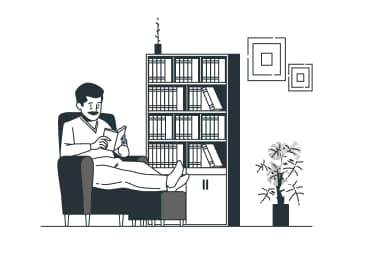

Speaking

Improve your English skills and confidence. Live classes and interactive lessons online. 20% extra free for a limited time only Learn English online and improve your skills through our high-quality courses and resources – all designed for adult language learners.
Learn more
Writing

One of the most important and extensive areas of natural science, the science that studies substances, also their composition
Learn more
Reading
perception and response actions of the user resulting from the use and/or upcoming use of the product, system or service
Learn more
Listening

Here you can find activities to practise your listening skills. Listening will help you to improve your understanding